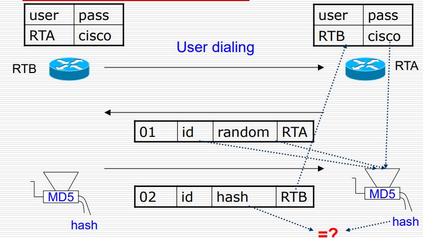

本文主要参考EagleBear2002的博客
广域网
1、广域网技术和设备
定义：WAN 是通过 WAN 服务提供商连接 LAN 的通信网络。
WAN在 OSI 的前三层运行，但主要集中在物理层和数据链路层。
广域网和局域网相比相对低效。
广域网物理结构

- CPE：Customer Premises Equipment，位于公司本地的设备（主要是接入设备），用于连接到网络，将用户的数据传输到服务提供商的网络中
- CO Switch：是位于服务提供商设施中心（Central Office）的交换机设备，连接到中心局，CPE需要与之相连。
广域网虚拟电路
分为两种：SVC和PVC
- 交换虚拟电路（SVC，Switched Virtual Circuits）：到目的地的WAN路径，可建立或终止（是一种逻辑上的连接）
- 永久虚拟电路（PVC，Permanent Virtual Circuit）：永久建立的虚拟电路
虚拟电路的三个阶段
- 电路建立-创建虚拟电路（逻辑确定）
- 数据传输-发送和接收用户数据（含有虚电路号等）
- 电路中断-拆除虚拟电路
永久虚拟电路的建立
- 只有一种模式：数据传输
- X.25 和帧中继（Frame Relay）使用 PVC
- 减少带宽使用，但增加成本
链接类型和带宽
- T：美国标准
- E：欧洲标准
- OC：同步光纤网标准
交换电路连接

- PSTN：需要调制解调器，慢
- ISDN：分为基本速率接口BRI和首选速率接口PRI，都是多个 B 信道和 D 信道组合
- BRI：提供两个B通道和一个D通道
- PRI：提供23个（美国或日本）或30个（欧洲）B通道和一个D通道
- 每个B通道：64Kbps；每个D通道：16Kbps
可以根据链接是T还是E判断美国还是欧洲
网络连接

广域网设备
1、调制解调器
- 也叫CSU/DSU(channel
service units/digital service units)（通道服务单元/数字服务单元）
2、广域网和OSI模型
WAN 标准主要描述 OSI 模型的物理层和数据链路层
- 物理层提供电器标准
- 数据链路层封装到远程的部分：帧标准。
WAN物理层
- 描述如何为 WAN 服务提供电气，机械，操作和功能连接的协议
- 描述了两种接口：数据终端设备（DTE，Data Terminal Equipment）和数据电路终端设备（DCE，Data Circuit-terminating Equipment）之间的接口
- DCE是服务提供商，DTE是连接的设备（用户路由器）
WAN数据链路层
- 描述了如何在单个数据链路上的系统之间承载帧。
- 它们包括旨在在专用（dedicated）点对点，多点和多址交换服务上运行的协议。
- 为了确保正确：需要为每一个串口指定一个方式组成帧
数据链路层帧封装
定义了如何封装数据以传输到远程站点：
- 点对点协议（PPP，Point-to-Point Protocol）由 IETF 开发，包含用于识别网络层协议的协议字段（包含一个协议单元，指定网络协议），根据不同的网络协议对帧做控制与检查
- 高级数据链路控制（HDLC，High-Level Data Link Control）ISO 标准，支持点对点/多点配置，每个厂商的实现方式不同因此互相不兼容
- 帧中继（Frame Relay）使用简化的封装，对高质量的数字设备不进行纠错。（比较高速）
- ISDN：通过现有电话线传输语音和数据的一组数字服务。（电路交换）
- 平衡的链路访问程序（LAPB，Link Access Procedure，Balanced）用于在 X.25 堆栈的第二层封装数据包的数据包交换网络。 提供点对点的可靠性和流量控制。
3、广域网访问方法
PPP/HDLC
他们俩都是广域网点对点链路中的封装方式，HDLC只能同一厂商使用
拥有相似帧格式：

PPP
一种标准的串行线路封装方法
- 由 IETF（The Internet Engineering Task）开发；取代 SLIP（Serial Line Internet Protocol）
- 包含标识网络层协议的字段
- 可以在建立连接期间检查链接质量
- 通过密码认证协议（PAP）和挑战握手认证协议（CHAP）提供认证
HDLC
是 Cisco 串行线的默认封装
- 没有窗口或流量控制
- HDLC 帧不能与其他供应商的设备互操作（帧中有一个专有类型码字段）
提供的功能
- 网络协议多路复用
- 动态分配 IP 地址
- 验证：PAP，CHAP
- 压缩
- 错误检测
组件
使用 HDLC（ISO HDLC，而非 Cisco HDLC）作为封装第三层数据报的基础
- 使用LCP（链接控制协议）以：建立连接、连接配置选项、链接质量测试
- 使用NCP（网络控制协议，Network Control Protocol）以选择和配置第 3 层协议。
帧格式

- Flag： 01111110 标记：帧的开头或结尾，01111110，一位可能会连续接受到多个帧
- Address：11111111，广播地址
- Control：00000011，用户数据作为无序帧传输
- Protocol： 数据字段中的协议类型（既可以指网络层，又可以指数据链路层）
- Data： 数据报，最大默认值为 1500 字节
- FCS： 2 或者 4 字节
会话建立/终止
每次通信需要完成四个阶段：
- 步骤一：链接建立和配置协商（negotiation）（LCP）。
- 步骤二：链接质量测试。
- 步骤三：网络层协议配置（NCP）。
- 步骤四：链接终止。
1、链接建立：
- 每个PPP设备发送LCP打开连接，包含一个配置选项字段（没有包含则使用默认值），在已发送和接收配置确认帧时完成此阶段
2、链路质量确定
- 测量链路上的错误率（在已配置情况下通过发送和接收 LCP 数据包实现）
- 可选：使用身份验证
3、网络层协议配置
- PPP 设备发送 NCP 数据包以选择和配置一个或多个网络层协议（例如 IP）
4、链接终止
- LCP 可以随时终止链接（基于一方请求，链接质量或超时）
- 关闭链接时，它将通知网络层协议，以便它们可以采取适当的措施。
PAP 安全认证协议
PPP 中一个可选择方法，用于身份认证。PAP 由一方向另一方发起请求，另一方选择是否接受，双方具有相同的用户名和密码，发起方可以多次尝试
- 远程节点重复发送用户名/密码对，直到确认身份验证或连接终止；
- 密码以明文形式通过链接发送。
- 在建立连接阶段之后，仅对远程节点进行一次身份验证。
配置命令：
1 | RTA(config-if)#encapsulation ppp |
CHAP
挑战握手认证协议（Challenge Handshake Authentication Protocol，CHAP），通过三阶段握手，避免了明文发送密码
- 服务器使用三阶段握手（three-way handshake） CHAP 协议定期验证主叫方。双方共享一个密钥
- 服务器向客户端发送一个随机生成的挑战（Challenge，一个随机值）。
- 客户端使用密码和挑战生成一个哈希值，并将其作为响应发送回服务器。
- 服务器收到响应后，使用事先共享的密钥和挑战再次生成哈希值。
- 服务器比对两次生成的哈希值，如果匹配，则认证成功。否则连接终止

第一步challenging：RTB请求连接RTA（双方都存储有一个事先商量好的密码以及不同的用户名）；RTA找一个时间发起挑战。
挑战中的内容：
- 编号
- id 是第几次挑战
- random：生成的随机数
- RTA：谁发起的挑战
第二步acknowledgement：然后RTB将random内容使用MD5算法计算新的值，并存入自己帧的random中进行应答
第三步Verifying Acknowledgement：收到 RTB 的回复，然后比较是否相同。
chap命令
1 | RTB(config-if)#encapsulation ppp |
综合数字服务网络ISDN
允许通过现有电话线传输数字信号：提供远程站点的连接
- 可以携带语音，视频和数据
- 使用带外 D（或 Delta）信道比调制解调器（有时<1s）更快的呼叫建立
- 使用 B（或屏障）通道以 64kps 提供更快的数据传输
BRI 和 PRI
BRI和PRI
ISDN 服务有两种：
- BRI（基本速率接口，Basic Rate Interface），用户虚拟电路数据传，HDLC，PPP
- PRI（主速率接口，Primary Rate Interface），发送控制信息，LAPD
BRI服务提供两个B信道和一个D信道
- BRI B ：以64 kbps的速率运行
- D： 16kbps 信令通道
标准：利用一套ITU-T 标准套件。有几种封装选择，两种最常见的封装是 PPP 和 HDLC。ISDN 默认为 HDLC。
非对称数字用户线路ADSL
Asymmetric Digital Subscriber Line
xDSL技术
用数字技术对现有的模拟电话用户线进行改造，使它能够承载宽带业务
- 把 0~4 kHz 低端频谱留给传统电话使用，而把原来没有被利用的高端频谱留给用户上网使用
- DSL ：数字用户线(Digital Subscriber Line)，xDSL的前缀 x 表示在数字用户线上实现的不同宽带方案
类型：
- ADSL (Asymmetric Digital Subscriber Line)：非对称
数字用户线
HDSL (High speed DSL)：高速数字用户线
SDSL (Single-line DSL)：1 对线的数字用户线
VDSL (Very high speed DSL)：甚高速数字用户线
IDSL ：ISDN 用户线
RADSL (Rate-Adaptive DSL)：速率自适应 DSL，是
ADSL 的一个子集，可自动调节线路速率
ADSL
1、ADSL的极限传输距离：
与数据率以及用户线的线径都有很大的关系（用户线越细，信号传输时的衰减就越大）
2、ADSL的特点
- 上行和下行带宽不对称：上行指从用户到 ISP，而下行指从 ISP 到用户
- 在用户线（铜线）的两端各安装一个 ADSL 调制解调器。
- 采用离散多音调 DMT (Discrete Multi-Tone)调制技术
3、DMT技术
采用频分复用的方法，把 40 kHz 以上一直到 1.1 MHz 的高端频谱划分为许多的子信道
- 上行信道：25个
- 下行信道：249个
- 每个子信道占据 4 kHz 带宽

3、ADSL的数据率
- 采用自适应调制技术使用户线能够传送尽可能高的数据率。（因为用户线的具体条件往往相差很大）
- 不能保证固定的数据率，通常下行数据率在 32 kb/s 到 6.4 Mb/s 之间，而上行数据率在 32 kb/s 到 640 kb/s 之间。
4、第二代ADSL
ADSL2（G.992.3 和 G.992.4） ADSL2+（G.992.5）
- 通过提高调制效率得到了更高的数据率（ADSL2：下行 8 Mb/s、上行 800 kb/s）（ADSL2+：频谱范围从 1.1 MHz 扩展至 2.2 MHz，下行速率可达 16 Mb/s（最大传输速率可达 25 Mb/s），而上行速率可达 800 kb/s）
- 采用了无缝速率自适应技术 SRA（Seamless Rate Adaptation），可在运营中自适应地调整数据率
SONET
同步光纤网SONET和同步数字系列 SDH
旧的数字传输系统存在的问题：
- 速率标准不统一
- 不是同步传输
同步光线网
Synchronous Optical Network，的各级时钟都来自一个非常精确的主时钟（铯原子钟，精度优于10-11秒）
- 第 1 级同步传送信号 STS-1的传输速率是 51.84 Mb/s。
- 光信号成为第一级光载波OC-1（Optical Carrier）
同步数字系列SDH
ITU-T以美国标准 SONET 为基础，制订出国
际标准同步数字系列 SDH
一般可认为 SDH 与 SONET 是同义词。
SDH 的基本速率为 155.52 Mb/s，称为第 1 级同步传递模块(Synchronous Transfer Module)，即STM-1，对应SONET 体系
中的 OC-3 速率
对应关系：

SDH体系结构
SDH 也是光传输。复用器和复用器之间分成段，使用转发器。
同步光纤网SONET
第 3 级同步传送信号 STS-3 传输速率是 STS-1 的3倍，以此类推
STS 帧为时分复用帧，8000 帧/秒，每帧 125 μS
SONET 标准的四个光接口层：
- 光子层(Photonic Layer)：处理跨越光缆的比特传送。
- 段层(Section Layer)：在光缆上传送 STS-N 帧。
- 线路层(Line Layer)：负责路径层的同步和复用。
- 路径层(Path Layer)：处理路径端接设备 PTE (PathTerminating Element)之间的业务的传输。
光纤同轴混合网
HFC (Hybrid Fiber Coax)
目前覆盖面很广的有线电视网 CATV 的基础上开发的一种居民宽带接入网，可传送 CATV 外，还提供电话、数据和其他宽带交互型业务。
现有的CATV是树形拓扑结构的同轴电缆网络，采用模拟技术的频分复用对电视节目进行单向传输。HFC 网则需要对 CATV 网进行改造，
HFC的主要特点
- 将原 CATV 网中的同轴电缆主干部分改换为光纤，并使用模拟光纤技术。
- 在模拟光纤中采用光的振幅调制 AM，这比使用数字光纤更为经济。
- 模拟光纤从头端连接到光纤节点（fiber node），即光分配节点 ODN（Optical Distribution Node）。在光纤节点光信号被转换为电信号。在光纤节点以下就是同轴电缆。（光信号转换成电信号）
具有比 CATV 网更宽的频谱，且具有双向传输功能

用户接口盒UIB (User Interface Box)
每个家庭要安装一个用户接口盒，提供三种连接：
- 使用同轴电缆连接到机顶盒(set-top box)，然后再连接到用户的电视机。
- 使用双绞线连接到用户的电话机。
- 使用电缆调制解调器连接到用户的计算机。
电缆调制解调器
是为 HFC 网而使用的调制解调器。是传输速率高（下行3-10Mb/s，上行0.2-2Mbs）
比在普通电话线上使用的调制解调器要复杂得多，只安装在用户端。
FTTx技术
（光纤到……）也是一种实现宽带居民接入网的方案。这里字母 x 可代表不同意思。
- 光纤到家 FTTH (Fiber To The Home)
- 光纤到大楼 FTTB (Fiber To The Building)
- 光纤到路边 FTTC (Fiber To The Curb)